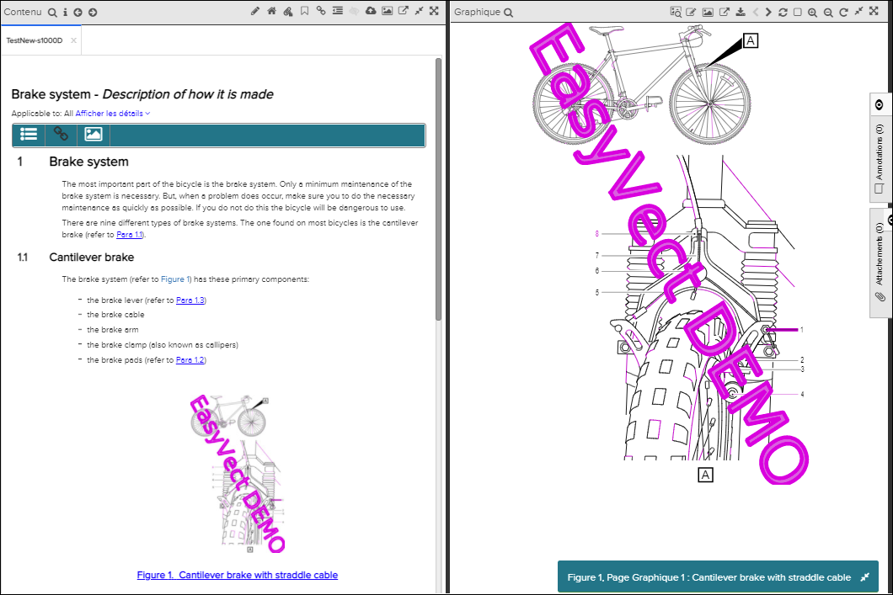
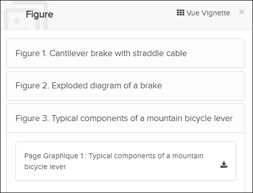
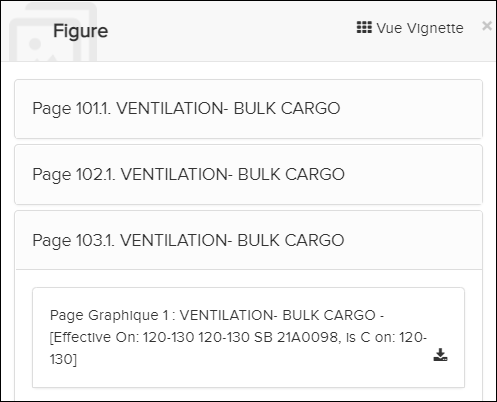
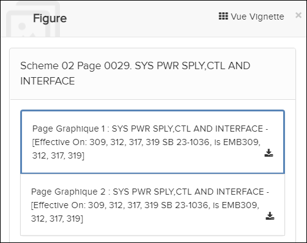
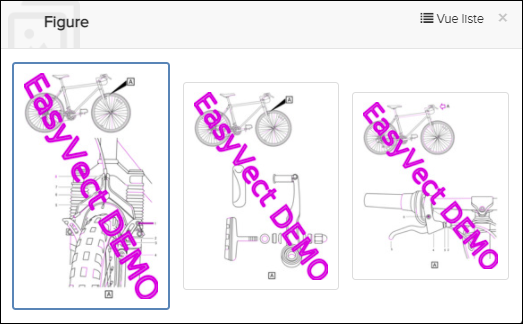
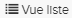

La fenêtre Graphique affiche des illustrations sélectionnées dans la fenêtre Contenu. Les illustrations sont représentées par des liens dans le texte, et en cliquant sur ceux-ci, l'interface utilisateur affiche automatiquement les fenêtres Contenu/Graphique.

La fenêtre graphique

Figure Liste - Vue liste

Figure Liste - Publication de câblage

Figure Liste - ASM Publication de câblage

Figure Liste - Vue Vignette

, pour revenir à une liste des chiffres.Le tableau qui suit décrit les différents éléments de la fenêtre Graphique.
| Eléments | Description |
|---|---|
| Trouvez dans l'illustration | Cliquez sur l'icône en forme de loupe pour ouvrir un champ de recherche qui
vous permet de rechercher du texte dans l'illustration actuellement affichée. Les
résultats de recherche sont surlignés. Remarque : Cette fonction est disponible uniquement
pour les graphique SVG.
|
| Activer la loupe | Cliquez sur cette icône pour passer en mode loupe et zoomer sur la zone où se trouve le curseur. Cliquez à nouveau sur l'icône pour quitter le mode loupe. |
| Créer une annotation | Cliquez sur cette icône pour créer une annotation pour un graphique. Faire référence à Créer une nouvelle annotation. |
| Cliquez sur cette icône pour ouvrir une Liste des illustrations. La liste contient des liens vers toutes les illustrations du document actuellement affiché. | |
| Cliquez sur cette option pour afficher la galerie de figures dans les documents actuellement consultés. | |
| Cliquez sur cette option pour afficher une liste des figures dans le document actuellement affiché. | |
| Cliquez sur cette icône pour ouvrir le graphique dans une nouvelle fenêtre. | |
| Télécharger la page graphique | Cliquez sur cette icône pour télécharger le graphique sur votre ordinateur.
Remarque : Les graphiques CGM sont convertis au format SVG lors du traitement dans Data
Manager. Le téléchargement des graphiques CGM originaux n'est pas disponible.
|
| Cliquez sur cette icône pour ouvrir l'image dans une nouvelle fenêtre du
navigateur. La nouvelle fenêtre affiche le graphique en taille réelle. Il n'y a pas
d'autres fonctions (zoom, pan, etc.) dans la nouvelle fenêtre. Remarque : L'icône est
uniquement disponible pour les images (PNG, GIF ...) et les graphique
SVG.
|
|
| Utilisez ces icônes pour passer à l'illustration suivante ou précédente. | |
| Rafraîchir | Cliquez sur cette icône pour réinitialiser le graphique dans sa taille et sa position d'origine dans la fenêtre (par exemple, si vous avez utilisé les fonctions zoom ou rotation). |
|
Cliquez sur l'icône Cliquez sur l'icône |
|
| Les boutons agrandir / rétrécir | Utilisez ces icônes pour faire un zoom agrandir et rétrécir. (Vous pouvez également utiliser la molette de la souris pour effectuer un zoom agrandir / rétrécir). |
| Faire pivoter l'illustration | Cliquez sur cette icône pour faire pivoter l'illustration de 90 ° dans le sens des aiguilles d'une montre. |
| Cliquez sur cette icône pour réduire la fenêtre Graphique et maximiser la fenêtre Contenu. | |
| Cliquez sur cette icône pour passer de 50/50 Contenu/Graphique pour afficher uniquement la fenêtre Graphique. | |
| Cliquez sur cette icône si vous voulez restaurer la vue 50/50 des fenêtres Contenu et Graphique. | |
| Cette boîte indique le titre du graphique. Vous pouvez réduire sa taille en
cliquant sur l’icône icon. Remarque : Si la publication est une
publication de câblage, la case affiche des informations supplémentaires (par
exemple, schéma et/ou numéro de page).
|
 pour activer le mode agrandir. Dans ce mode, vous pouvez
sélectionner une zone à zoomer.
pour activer le mode agrandir. Dans ce mode, vous pouvez
sélectionner une zone à zoomer. pour activer le mode panoramique. Dans ce mode, le
curseur devient une flèche de quatre côtés et vous pouvez faire glisser
l'illustration dans la direction que vous voulez.
pour activer le mode panoramique. Dans ce mode, le
curseur devient une flèche de quatre côtés et vous pouvez faire glisser
l'illustration dans la direction que vous voulez.